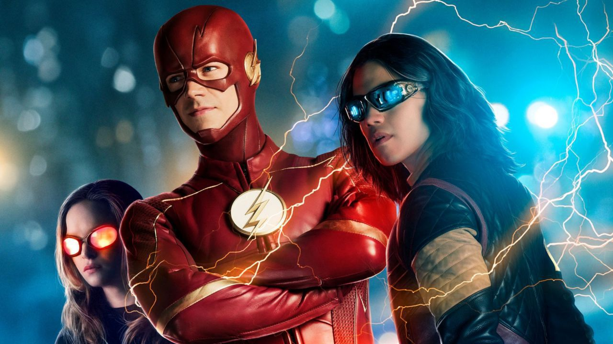

About The Flash
The Flash is fast! He's a man with superspeed who runs to save the world.
Team Flash
Flash's chracteristics
- He is very fast
- His childhood is ruined by his arch-nemesis
- No matter what, he will save the day!
Team Flash
The Flash has a few members in his team who help him save the day! Click on the links below to know more about Team Flash: